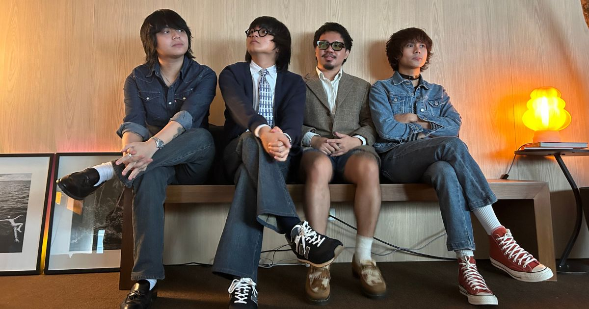

Latest News & Updates
Stay up-to-date with IVOS’s latest releases, events, and announcements.

IV-SPADES Unique Salonga Reunite After 5 Years, ‘Aura’
After a five-year hiatus, IV of Spades dropped their new single “Aura,” marking the return of Unique Salonga to the lineup. Source: Philstar
Read full article →

IV OF SPADES ‘Andalucia’ Comeback Album
The band released their comeback album “Andalucia,” their first full-length since 2019’s “CLAPCLAPCLAP!”. Source: GMA Network
Read full article →